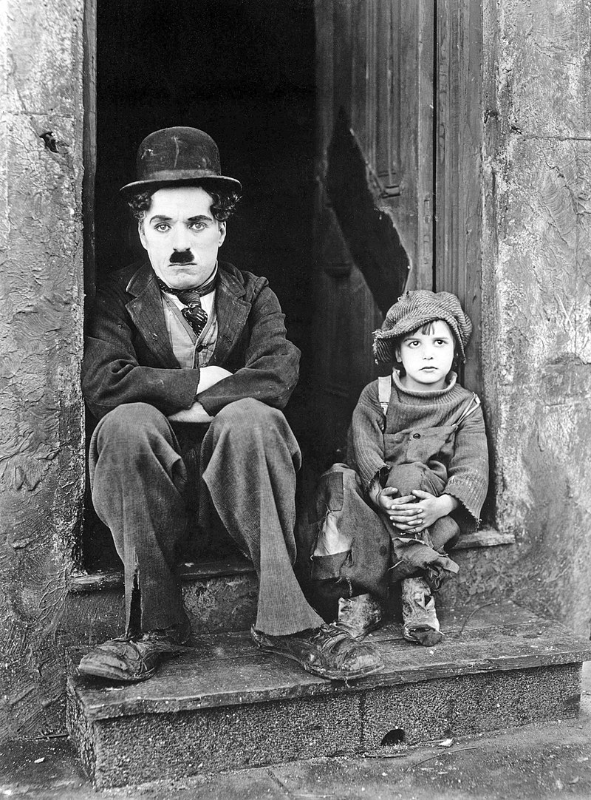

La cinematografía es la creación de secuencias de imágenes que simulan movimiento. El término engloba el formato en película y de imágenes digitales producidas con una cámara de vídeo. Se encuentra relacionada con la fotografía, que presenta imágenes fijas, sin ser una subcategoría de ella, sino una herramienta que el cinematógrafo utiliza en adición de otras técnicas físicas, organizativas, directivas, interpretativas y manipuladoras de la imagen para efectuar un proceso coherente. En el momento del rodaje, mientras la cámara y los elementos de la escena se encuentran en movimiento, surgen numerosas posibilidades de creatividad, así como también aparecen dificultades de carácter técnico.
Puede decirse que la cinematografía es una forma de art du spectacle, corrientemente designada como «séptimo arte», según la expresión utilizada por el crítico de cine Ricciotto Canudo en la década de los años 20 y el periodista francés Georges Sadoul, « Histoire du cinéma mondial, des origines à nos jours ». González Víctor Raúl ofrece la siguiente definición de cinematografía: "Consiste en plasmar una percepción de imágenes en movimiento con o sin sonido, tal vez distorsionada en la mayoría de las realizaciones cinematográficas, pero con un sentido propio y de querer dar una visión más amplia, simple o compleja de la realidad, la historia, el concepto de futuro y de la ficción."
